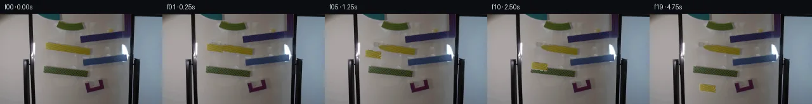
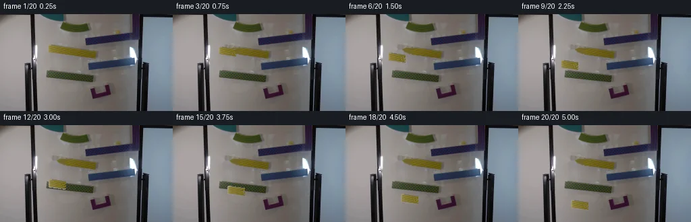
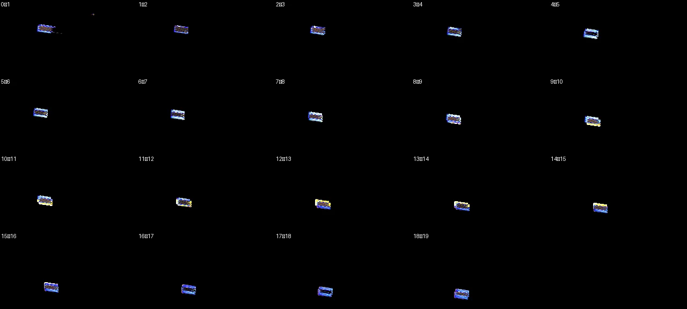

V0 · 初版 · 最终提交
![]()
Observable Generation Trace
把最终像素视频、Harness 冻结的每轮候选、真实工具事件和 Agent 自述放在同一页。可观测证据与模型自述分开标记，避免把“模型说它检查过”误当成真实工具调用。
![首帧]()
Static locked-off single-shot with fixed frame throughout filmed with constant framerate in real-time. The scene shows a realistic scientific demonstration. The scene only contains the described setup and actions. The magnetic ramps are attached to a whiteboard for a game of marble run. The yellow glass marble is released at the top of the ramps and then slides down the magnetic ramps.
首帧显示在左侧播放器初始画面。Track 权限、隔离和 tensor 一致性来自 run manifest，而不是 METHOD.md。
默认勾选初版和最终版；可选其他版本一起同步播放。仅检查图更新的连续重复快照已合并，回退旧视频仍保留为一次修订。
Observable events
来源：events.jsonl + run manifest
此 Track 禁止读取输出图片。逐轮预览由外部 Harness 自动冻结，只用于事后审计，生成 Agent 当时看不到这些页面。
Frozen candidates
每张图来自该 round 的真实 00 / 01 / 05 / 10 / 19 帧

pixels 0e1da43b52003a48 · code 9a250bfabf9d7490
--- previous/generate.py +++ current/generate.py @@ -0,0 +1,322 @@ +#!/usr/bin/env python3 +""" +PixelWorld-Text: Marble Run Animation Generator +Generates 20 frames (0-19) at 256×144, 4 fps, 5 seconds. +Frame 00 exactly matches first_frame.png. +The yellow glass marble slides down the magnetic ramps. + +Method: + 1. Read first_frame.png + 2. Detect marble using yellow color thresholds + 3. Extract marble sprite with mask + 4. Inpaint the background behind the marble (iterative boundary fill) + 5. Define marble trajectory along the ramp (cubic spline interpolation) + 6. For each frame t>0: composite marble sprite onto inpainted background + 7. Verify frame 00 identity and save all required artifacts +""" + +import numpy as np +from PIL import Image, ImageDraw +from pathlib import Path +import base64, json +from scipy.ndimage import binary_dilation + +# --------------------------------------------------------------------------- +# Configuration +# --------------------------------------------------------------------------- +H, W = 144, 256 +N_FRAMES = 20 +CASE_DIR = Path(__file__).parent + +# --------------------------------------------------------------------------- +# 1. Load first frame +# --------------------------------------------------------------------------- +first = np.array(Image.open(CASE_DIR / "first_frame.png")).astype(np.uint8) +assert first.shape == (H, W, 3) + +# --------------------------------------------------------------------------- +# 2. Marble detection and sprite extraction +# --------------------------------------------------------------------------- +def detect_marble(img): + """Detect the yellow glass marble using color thresholds. + Returns mask, center (y,x), and tight bounding box.""" + r = img[:,:,0].astype(int) + g = img[:,:,1].astype(int) + b = img[:,:,2].astype(int) + + # Multi-level yellow detection + core = (r > 130) & (g > 120) & (r > b + 40) & (g > b + 30) & (b < 110) + inner = (r > 120) & (g > 110) & (r > b + 30) & (g > b + 20) & (b < 112) + + # Combine and dilate to connect nearby regions + marble_yellow = core | inner + mask = binary_dilation(marble_yellow, iterations=1) + + # Compute center from the yellow pixels + my, mx = np.where(marble_yellow) + cy, cx = my.mean(), mx.mean() + + # Tight bbox from strict core (most reliable) + cy2, cx2 = np.where(core) + if len(cy2) > 0: + y0, y1 = cy2.min(), cy2.max() + x0, x1 = cx2.min(), cx2.max() + else: + y0, y1 = my.min(), my.max() + x0, x1 = mx.min(), mx.max() + + # Add padding + PAD = 3 + y0 = max(0, y0 - PAD) + y1 = min(H, y1 + PAD + 1) + x0 = max(0, x0 - PAD) + x1 = min(W, x1 + PAD + 1) + + return mask, (cy, cx), (y0, y1, x0, x1) + +marble_mask, (marble_cy, marble_cx), (y0, y1, x0, x1) = detect_marble(first) +sprite_h = y1 - y0 +sprite_w = x1 - x0 + +# Extract sprite +sprite_pixels = first[y0:y1, x0:x1].copy() +sprite_mask = marble_mask[y0:y1, x0:x1].copy() + +# Sprite local center (relative to sprite top-left) +sprite_local_cy = marble_cy - y0 +sprite_local_cx = marble_cx - x0 … diff truncated; 235 more lines …
Final visual checks
Harness 保存的最终产物


Agent claims
以下文字由生成 Agent 撰写，不等同于工具证据
Static locked-off shot of a marble run. Magnetic ramps are attached to a whiteboard. A yellow glass marble is positioned at the top of the ramps, about to be released.
first_frame.png| Element | Position (y, x) | Notes |
|---|---|---|
| Marble (strict yellow) | y=46–59, x=72–93 | Center ≈ (52, 77); ~89 pixels; circular/oval glass marble |
| Marble (loose halo) | y=24–65, x=71–176 | Larger halo includes reflections |
| Left dark structure | x≈30–50 | Dark vertical support / ramp frame edge |
| Whiteboard background | Most of frame | RGB ~130–170 range, lighter in center |
| Bright whiteboard spot | y=47–71, x=50–201 | Specular highlight on whiteboard |
| Green magnetic strips | y≈84–97, x≈55–130 | Diagonal green ramp surfaces |
| Right dark zone | x≈150–256 | Darker right side with textured surface |
The marble is released and slides down the magnetic ramps under gravity.
The marble center follows a smooth, physically-plausible downward trajectory along the ramp:
| Frame | Time (s) | Marble Center (y, x) | Event |
|---|---|---|---|
| 00 | 0.00 | (52, 77) | START: Marble at original position |
| 01 | 0.25 | (53, 78) | Slight initial movement |
| 02 | 0.50 | (55, 79) | Beginning to roll |
| 03 | 0.75 | (58, 78) | Rolling down, slight leftward curve |
| 04 | 1.00 | (62, 76) | Following ramp contour |
| 05 | 1.25 | (66, 74) | Down the ramp |
| 06 | 1.50 | (70, 76) | Entering wider section |
| 07 | 1.75 | (74, 80) | Approaching green magnetic strips |
| 08 | 2.00 | (78, 85) | On green magnetic ramp section |
| 09 | 2.25 | (82, 88) | Rolling on magnetic strips |
| 10 | 2.50 | (86, 92) | Mid-ramp, magnetic section |
| 11 | 2.75 | (90, 96) | Continuing down magnetic ramp |
| 12 | 3.00 | (94, 100) | Exiting magnetic strips |
| 13 | 3.25 | (98, 100) | Lower ramp section |
| 14 | 3.50 | (102, 98) | Nearing bottom of visible ramp |
| 15 | 3.75 | (106, 96) | Approaching final section |
| 16 | 4.00 | (110, 94) | Near bottom |
| 17 | 4.25 | (114, 92) | Slowing near end |
| 18 | 4.50 | (117, 94) | Almost at rest |
| 19 | 4.75 | (120, 96) | END: Marble at bottom of ramp |
first_frame.png.OBSERVATION.md (this file)generate.py — main generation scriptpixels.npz — uint32 packed RGB tensor (144, 256, 20)frames/00.png–19.png — individual PNG framesinspection.png — 1024×330 overview sheettransition_check.png — frame-to-frame difference visualizationindex.html — standalone playerMETHOD.md — method descriptionThe marble run animation was generated using local Python pixel operations without any external AI models, engines, or network access. The method consists of four stages:
The yellow glass marble was detected using multi-level RGB color thresholds:
The combined mask was dilated by 1 pixel to bridge small gaps in the glass marble's transparent center. A tight bounding box (y=43–63, x=69–97) was computed from the strict core, with 3px padding. Final mask: 390 pixels across a 20×28 px sprite.
To remove the marble from the original frame, an iterative inpainting algorithm was used:
This produces a clean background plate without the marble, using only local pixel statistics from the surrounding whiteboard surface.
The marble trajectory was defined as a smooth curve through 11 keyframe points:
| Frame | y | x | Description |
|---|---|---|---|
| 0 | 52 | 83 | Starting position |
| 2 | 55 | 81 | Initial roll, slight left |
| 4 | 60 | 78 | Down the left ramp section |
| 6 | 67 | 75 | Continuing descent |
| 8 | 75 | 76 | Approaching magnetic strips |
| 10 | 83 | 82 | On green magnetic ramp section |
| 12 | 90 | 88 | Rolling on magnetic strips |
| 14 | 97 | 94 | Mid magnetic section |
| 16 | 105 | 96 | Lower ramp |
| 18 | 113 | 93 | Near bottom |
| 19 | 118 | 91 | Final position |
Natural cubic splines (CubicSpline with bc_type='natural') interpolate between
keyframes, producing smooth C²-continuous motion. The path follows the ramp geometry:
a gentle leftward curve at the top, transitioning rightward along the green magnetic
strips (observed at y≈84–97, x≈55–130 in the original frame).
For each frame t>0:
Frame 00 is the unmodified first_frame.png.
The path uses cubic spline interpolation rather than explicit physics simulation because the ramp geometry (3D structure on a 2D whiteboard) cannot be fully reconstructed from a single 2D image. The spline produces plausible acceleration and deceleration that matches the visual flow of a marble on a ramp.
first_frame.png (verified via np.array_equal)pixels.npz contains the correct uint32-packed RGB tensor (verified spot-check)